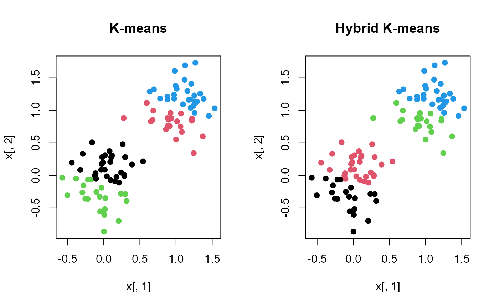

Hybrid K-means clustering using hierarchical clustering to define cluster-centers
hybrid.kmeans(x, k = 2, hmethod = "ward.D", stat = mean, ...)
| x | A data.frame or matrix with data to be clustered |
|---|---|
| k | Number of clusters |
| hmethod | The agglomeration method used in hclust |
| stat | The statistic to aggregate class centers (mean or median) |
| ... | Additional arguments passed to |
returns an object of class "kmeans" which has a print and a fitted method
This method uses hierarchical clustering to define the cluster-centers in the K-means clustering algorithm. This mitigates some of the know convergence issues in K-means.
options for hmethod are: "ward.D", "ward.D2", "single", "complete", "average", mcquitty", "median", "centroid"
Singh, H., & K. Kaur (2013) New Method for Finding Initial Cluster Centroids in K-means Algorithm. International Journal of Computer Application. 74(6):27-30
Ward, J.H., (1963) Hierarchical grouping to optimize an objective function. Journal of the American Statistical Association. 58:236-24
kmeans for available ... arguments and function details
hclust for details on hierarchical clustering
Jeffrey S. Evans <jeffrey_evans@tnc.org>
x <- rbind(matrix(rnorm(100, sd = 0.3), ncol = 2), matrix(rnorm(100, mean = 1, sd = 0.3), ncol = 2)) # Compare k-means to hybrid k-means with k=4 km <- kmeans(x, 4) hkm <- hybrid.kmeans(x,k=4) opar <- par(no.readonly=TRUE) par(mfrow=c(1,2)) plot(x[,1],x[,2], col=km$cluster,pch=19, main="K-means") plot(x[,1],x[,2], col=hkm$cluster,pch=19, main="Hybrid K-means")